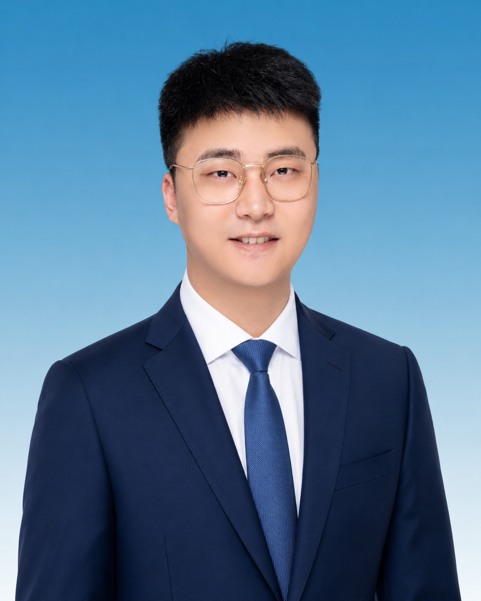

QMUL
伦敦大学玛丽女王学院
Queen Mary University of London
- 学院
- 玛丽女王金融学院
- 专业
- 投资银行学
- 学位
- 硕士
Related Coursework
聚焦资本市场、估值分析与金融产品理解，构建系统性的金融专业基础。
金融服务与综合履历档案
Financial Services · Capital Markets · Public Communication
以资本市场服务为专业基础，以组织协同、政策理解与文字表达为复合能力支撑。

政治学与投资银行学的复合海外教育训练，构成宏观理解、逻辑表达与金融专业能力的双重基础。
Queen Mary University of London
聚焦资本市场、估值分析与金融产品理解，构建系统性的金融专业基础。
University College London
强化宏观视野、公共议题理解与逻辑表达能力，为后续金融实践提供跨学科思维基础。
从政治学的宏观思维，到投资银行学的专业训练，形成了“理解结构—分析问题—推进实践”的复合型能力基础。
围绕资本市场服务、综合金融方案、机构协同与客户经营，形成多业务场景下的项目推进能力。
以研究协作、党建宣传与公共议题表达为核心，形成兼具组织意识、材料能力与正式传播能力的履历侧面。
收录个人出版作品与后续编撰作品，呈现长期写作、文本组织、哲学思辨与结构化表达能力。
以教育背景、金融业务实践、组织协作经历与长期文字表达能力为基础，构成复合型青年金融从业者的正式能力结构。
政治学与投资银行学的复合海外背景，加之具体事务的操作实践，能够站在宏观角度，把握政策导向与业务发展的内在联系，从一时一事的成败及时做到举一反三。
通过与本企业领导，外部上市公司、国有银行、金融同业等高管人员沟通，构筑了本人上传下达、资源协调和复杂项目的营销管理能力，高效推动各项任务目标落地。
借鉴西方哲学思想，运用逻辑思维，精细打磨文字，深入学习视频渲染、作图制图等多种外宣工具，适应不同场景和需求撰写各类公文、报告、演讲稿及宣传材料。
长期坚持书籍创作与文化内容策划。熟练运用主流模型、Codex 与 AIGC 工具。具备前后端协同、网页搭建、交互设计能力。将数字技术与视觉表达结合，形成可传播的综合内容。